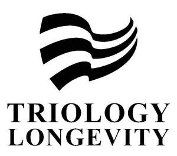

Trade Mark Journal No.2025/043 24 October 2025
UK00004231765 10 July 2025 (3,5,35,41,42,44)

- Class 3
- Lipsticks; Beauty masks; False eyelashes; Cosmetic preparations for eyelashes; Cosmetics; Cotton wool for cosmetic purposes; Cosmetic pencils; Cosmetic creams; Make-up removing preparations; Scented water; Greases for cosmetic purposes; Oils for cleaning purposes; Lotions for cosmetic purposes; Perfumes; Make-up powder; Adhesives for affixing false eyelashes; Shampoos for human hair; Natural oils for cosmetic purposes.
- Class 5
- Albuminous foodstuffs for medical purposes; Syrups for pharmaceutical purposes; Capsules for medicines; Pharmaceutical preparations; Liquorice for pharmaceutical purposes; Tonics [medicines]; Dietetic foods adapted for medical purposes; Cellulose esters for pharmaceutical purposes; Dietetic substances adapted for medical use; Nutritional supplements; Dietary supplements for animals; Disinfectants; Plant extracts for pharmaceutical purposes; Pharmaceuticals; Dietary supplements with a cosmetic effect; Dietary supplements for human beings; Vitamin preparations; Medicated sweets; Dietary fibre.
- Class 35
- Business inquiries; Dissemination of advertising matter; Updating of advertising material; Market studies; Publicity material rental; Publication of publicity texts; Radio advertising; Television advertising; Marketing research; Organization of exhibitions for commercial or advertising purposes; Providing business information; Rental of advertising space; Sales promotion for others; Procurement services for others [purchasing goods and services for other businesses]; Presentation of goods on communication media, for retail purposes; Providing commercial information and advice for consumers in the choice of products and services; Marketing; Retail services for pharmaceutical, veterinary and sanitary preparations and medical supplies; Provision of an online marketplace for buyers and sellers of goods and services.
- Class 41
- Arranging and conducting of workshops [training]; Providing amusement arcade services; Organization of fashion shows for entertainment purposes; Coaching [training]; Arranging and conducting of in-person educational forums; Training services provided via simulators; Cultural, educational or entertainment services provided by art galleries; Sound engineering services for events; Providing user reviews for entertainment or cultural purposes; Providing training and educational examination for certification purposes; Research in the field of education; Arranging and conducting of entertainment events; Instruction services; Providing user rankings for entertainment or cultural purposes.
- Class 42
- Chemistry services; Chemical research; Material testing; Research and development of new products for others; Biological research; Scientific research in the field of environmental protection; Scientific research; Medical research; Culturing of cells for scientific research purposes; Scientific research in the field of genetics; Research in the field of artificial intelligence technology.
- Class 44
- Medical clinic services; Convalescent home services; Health care; Medical assistance; Sanatorium services; Nursing, medical; Pharmacy advice; Aromatherapy services; Telemedicine services; Health spa services; Human tissue bank services; Medical analysis services for diagnostic and treatment purposes provided by medical laboratories; Music therapy; Remote monitoring of medical data for medical diagnosis and treatment; Medical treatment using cultured cells; Cultured cell bank services for medical transplantation; Health centre services; Medical screening.
Ming Hou
Representative: SHENZHEN ZHONG GANGXING SHUNLI INTELLECTUAL PROPERTY AGENCY CO., LTD